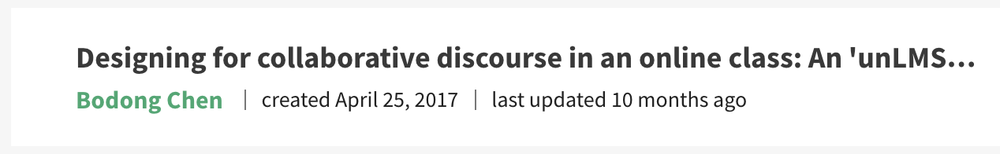
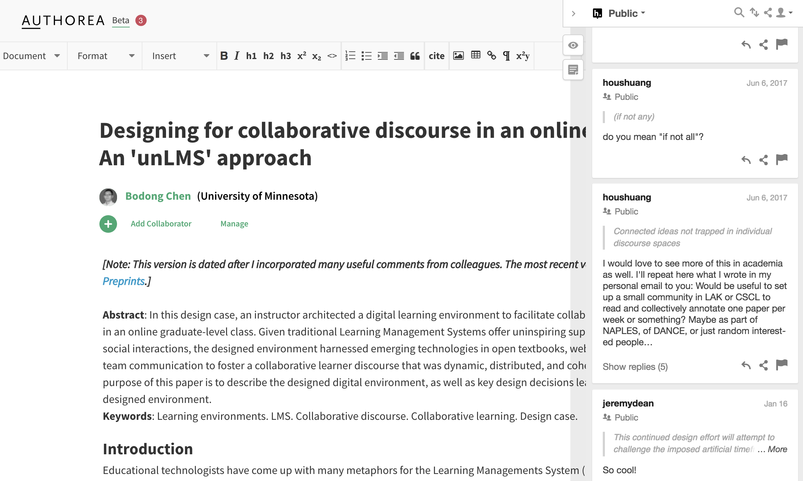
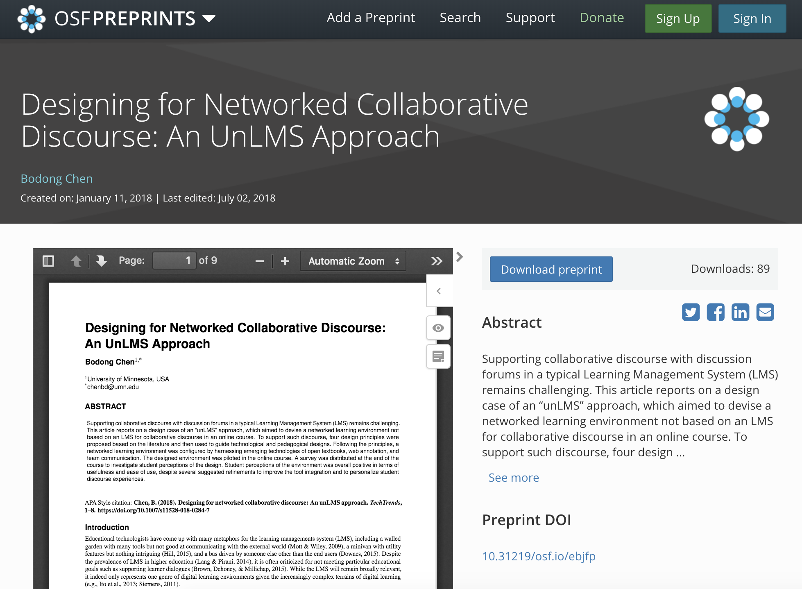

This week is the Open Access Week 2018. Yesterday we spent some time during a student advising meeting talking about the what and why of Open Access.
The Open Access Week website has provided a great list of ideas for researchers to get involved in Open Access. My own institution does have an Open Access policy. Our univeristy library system also provides support for Open Access including an Open Access Publishing Fund, a Digital Conservancy system, a Research Data Repository, etc. Not to mention my college is spearheading the Open Textbook Library.
In this post, I am writing up a few vignettes based on my humble journey with Open Access.
Being Aware
In 2009, I became aware of Open Access during a talk at Beijing Normal (probably given by Stian Haklev). At that time, he was finishing up his master’s thesis on “top-quality open courses in China,” and P2PU he co-founded was still an emerging thing.
Open access, Open license, "Free Speech/Beer", Peer production, Yochai Benkler, P2PU, CMU OLI, Stephen Downes, SLL… (May 31th in BNU)
— ʙᴏᴅᴏɴɢ ᴄʜᴇɴ (@bod0ng) May 31, 2009
In 2010, I participated in an Open Access Week event at OISE of the University of Toronto. Leslie Chan, a professor from University of Toronto at Scarborough, and Stian were running a panel in the OISE library. I don’t remember what they were presenting but I’m quite sure their arguments were so eloquent that I became invested in Open Access on that day.
Sharing Drafts, Posting Preprints
Yesterday, I participated in a fun discussion with colleagues from the Office of Innovation at the University of Michigan about my paper about “unLMS”. Interestingly, this paper has yet to be included in a formal, printed issue of the journal TechTrends.
Great turnout for brown bag lunch with guest @bod0ng on networked collaborative discourse @UMichiganAI @rebquintana pic.twitter.com/fwe2thdsJE
— Nobuko Fujita (@nobukofujita) October 26, 2018
Here is the timeline of this particular piece of work:
In April 2017, I started an open manuscript on Authorea.

In June 2017, before submitting this paper to TechTrends, I openly invitated colleagues on Twitter to comment on this manscripts. I received a bunch of comments from Stian, which I incorporated into the submitted version.

In Jan 2018, I uploaded a preprint on the Open Science Framework. Jeremy Dean from Hypothes.is chimed in on Authorea later in Jan 2018 and we eventually met in June 2018 at the I Annotate conference in San Francisco.

On April 22, 2018, after going through two rounds of revisions (with great comments from reviewers and the editor), the article was publised “Online First” in TechTrends.
Till now, October 2018, this article is still in its “Online First” status and may get included in an issue next year. However:
- its first version on Authorea has been annotated 24 times
- its OSF preprint has been downloaded 89 times
- its Springer “Online First” version has been downloaded 89 times, shared 14 times, and annotated 43 times
From its inception in 2017 to its “formal” appearance in a printed issue in 2019, a whole lot has happened to this particular work. Indeed, I’ve spent extra hours to make things work (e.g., converting between document formats, uploading to OSF). But this journey, which I did not anticipate in the beginning, has been extremely rewarding. This article may not be my seminal work, but it is reassuring that by doing bits and pieces related to Open Access, we as researchers can (1) receive feedback from a broader audience, (2) make valuable connections with colleagues, and (3) get our work read and discussed – much earlier than its formal publication.
Voicing the Stance
Despite the power of Open Access – and more broadly, Open Scholarship – I’ve experienced so far, it is unfortunate some disciplines and some tenure committees (not mine) would bluntly equate Open Access with “lesser quality.” The tyranny of metrics is worth a separate post. But here I want to share a statement related to Open Access I decided to include in my dossier (as a tenure-track professor):
As an interdisciplinary scholar, I seek to publish in refereed journals from various fields of research, including learning sciences, educational technology, educational psychology, and learning analytics.
As an advocate of Open Scholarship, I also attempt to balance my publication venues between “traditional” journals and quality open-access alternatives.
As a scholar with Chinese heritage, I also write for audiences who speak my mother tongue.
Despite 10 years of #OpenAccessWeek, we still have a long way to go to make “Invisible Labour” in Open Scholarship visible and valued. This is a sudden realization I had this year, thanks to the tweet below.
#OAweek event in Vancouver BC Canada: Open but not free: Invisible Labour in Open Scholarship. pic.twitter.com/aNz8txzD1c
— Christina Hendricks (@clhendricksbc) October 25, 2018
While I will continue to do those “bits and pieces,” I will especially try to be a strong adavocate for: (1) valuing work published in many quality open-access journals, and (2) crediting labor put into Open Scholarship – including Open Access, Open Education, and Open Data (according to SPARC) – in tenure or performance review committees.
More broadly, we need changes with institutional culture, re-imagined writing and publishing practices (like PubPub), and better Open Scholarship infrastructure (like the Open Science Framework, ICPSR, and Open Web Annotation).
I wonder how things may look like in 2028!